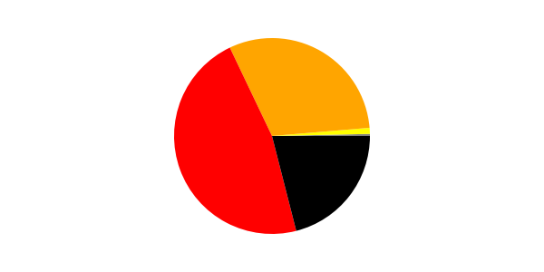

Vulnrichment Dashboard
Generated On: 2024-06-25 11:09:08 PST
CVE SSVC Enrichment Data
SSVC (Stakeholder-Specific Vulnerability Categorization) is a set of metrics that provide a qualitative measure of the severity of a vulnerability. The SSVC metrics are designed to be used by organizations to prioritize the vulnerabilities they address. The SSVC metrics are based on the Common Vulnerability Scoring System (CVSS) and are intended to complement CVSS by providing additional information about the characteristics of a vulnerability that are not captured by CVSS. The data in the following table is drevied from the timestamp value found in the ADP metadata.
| Time Period |
CVE Count |
| Today |
96 |
| This week |
194 |
| Last week |
751 |
| This month |
3073 |
| Last month |
4044 |
| This year |
10434 |
SSVC Exploitation
| Exploitation |
Count |
| Active |
74 |
| POC |
1058 |
| None |
9314 |
SSVC Automatable
| Automatable |
Count |
| Yes |
1295 |
| No |
9151 |
SSVC Technical Impact
| Technical Impact |
Count |
| Total |
3084 |
| Partial |
7362 |
CISA ADP CVE Metric Additions
| Metric |
Number of CVE Records with ADP added value |
| CVSS 3.1 Score |
1216 |
| CWE-ID |
1299 |
| CPE String (at least 1) |
4508 |
Top 5 CWE IDs (ADP)
| CWE ID |
Count |
| CWE-89 - Improper Neutralization of Special Elements used in an SQL Command ('SQL Injection') |
132 |
| CWE-79 - Improper Neutralization of Input During Web Page Generation ('Cross-site Scripting') |
112 |
| CWE-121 - Stack-based Buffer Overflow |
83 |
| CWE-416 - Use After Free |
60 |
| CWE-400 - Uncontrolled Resource Consumption |
44 |
CVSS 3.1 Severity Level Distribution (ADP)

| Severity Level |
Count |
| Critical | 227 |
| High | 527 |
| Medium | 422 |
| Low | 27 |
| None | 13 |